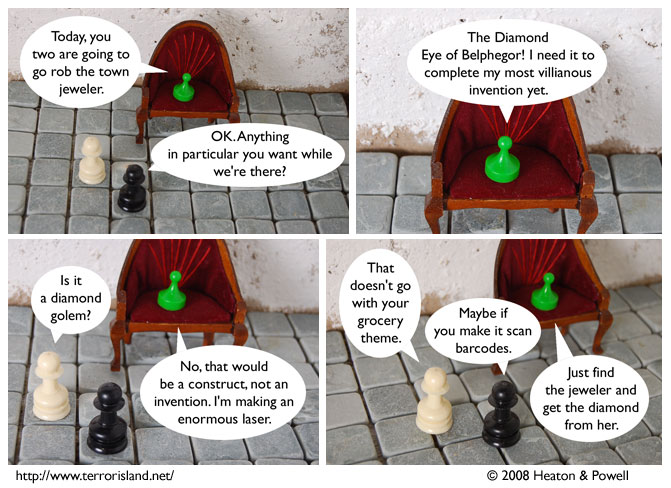

Strip #308
— Friday, May 30, 2008
Every good town jeweler stocks diamonds of mythical proportions.
Notes, Thoughts, &c.
Ben’s Notes
If there’s one thing I remember from optics classes, it’s that a laser is only as powerful as its giant diamond energy source.
Lewis’s Notes
Note that this is trivially the Green Grocer’s most villianous invention yet, since he hasn’t really done much inventing. Also, you might want to note that lasers are not inherently villianous.